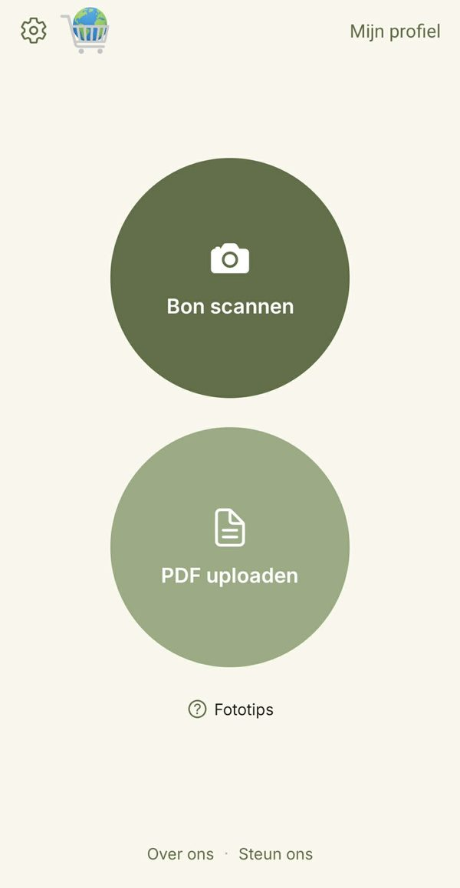
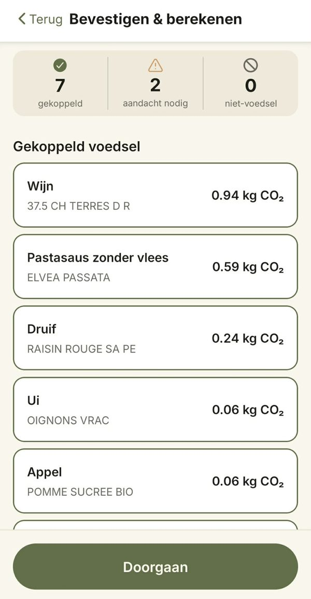
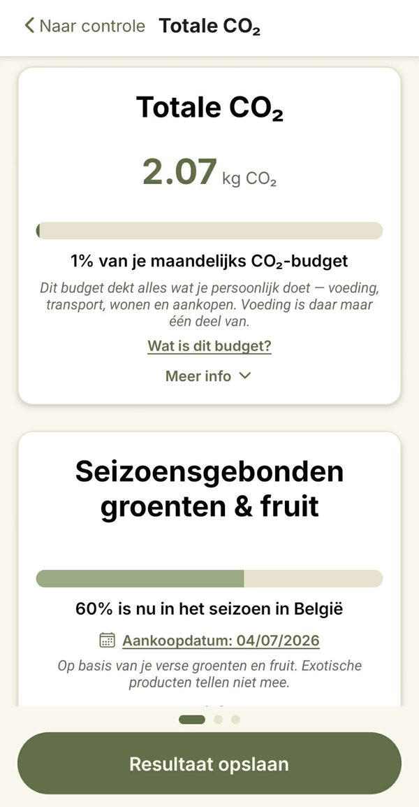

Zie de koolstofvoetafdruk van je boodschappen
Neem een foto van je kassabon. ClimateCart schat de CO₂ van elk product en toont wat je boodschappen samen uitstoten.
Android-app · Nederlands, Français, English
Hoe het werkt
-

1. Scan je kassabon
Fotografeer een papieren kassabon (tot 3 foto's voor een lange bon) of laad een pdf-kassabon op.
-

2. Controleer de producten
ClimateCart koppelt elke lijn op je kassabon aan een voedingscategorie. Je ziet wat herkend werd en past aan wat aandacht nodig heeft.
-

3. Bekijk je voetafdruk
Je krijgt het totaal in kg CO₂, per product en als deel van je maandelijks CO₂-budget. Je ziet ook hoeveel van je verse groenten en fruit in België in het seizoen is, en wat een meer plantaardige boodschappenmand zou uitmaken.
Maak een account aan om je kassabonnen te bewaren en je voetafdruk over de tijd te volgen.
Waarom we dit maken
Wie weet écht wat 1 kg of een ton CO₂ voorstelt? ClimateCart zet bij elke boodschappenronde een reëel cijfer voor je neus, zodat die getallen iets beginnen te betekenen. Kassabonnen scannen is het middel, niet het doel.
Regels, geen AI
Voor het koppelen van je producten wordt geen AI gebruikt. ClimateCart werkt met een koppelingsalgoritme en een grote productdatabank die we voortdurend verbeteren, zodat de resultaten steeds beter worden. De koolstofwaarden komen uit Agribalyse, de referentiedatabank voor voeding van het Franse milieuagentschap ADEME. Zonder AI-model vraagt dat veel minder rekenkracht, en dezelfde kassabon geeft altijd hetzelfde resultaat.
Eerlijke schattingen
We hebben geen gegevens van individuele producenten, dus elk resultaat is een schatting: een goede indicatie van wat een typische waarde voor dat product kan zijn. Zo krijg je een duidelijk beeld van de totale impact van je voedingskeuzes. Het is niet bedoeld om merken van gelijkaardige producten met elkaar te vergelijken.
Je gegevens
Foto's en pdf's van je kassabon worden niet bewaard: ze worden één keer gelezen om je producten te vinden en daarna verwijderd. Foto's worden gelezen door de tekstherkenning van Google; pdf's worden volledig door de eigen server van ClimateCart verwerkt, zonder externe diensten. Geen trackingcookies, geen advertentie-ID's, geen locatiegegevens. Resultaten worden enkel bewaard als je aangemeld bent en ze zelf opslaat, en ze blijven in de EU.